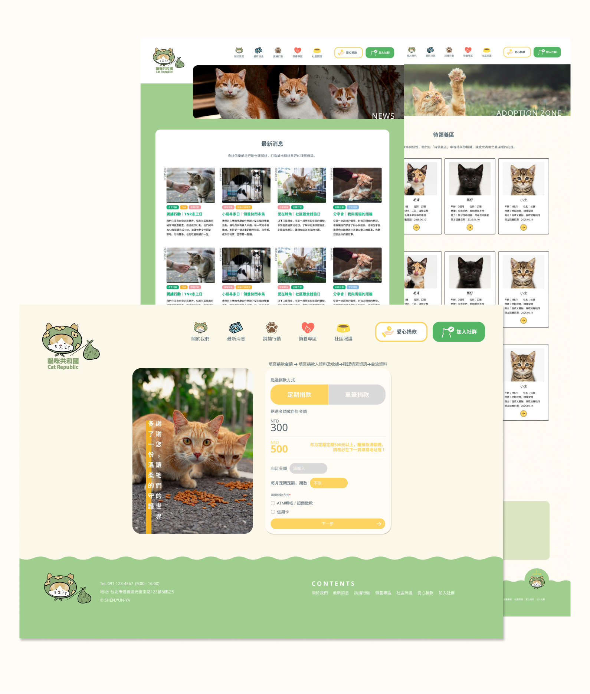

PROJECTS
貓咪共和國 | 個人專題

「貓咪共和國 CatRepublic」期望透過 TNR (誘捕-絕育-放回)(Trap-Neuter-Return) 與領養結合，透過平台的協助提供流浪貓溫暖的家，並串聯愛貓人士與社區的凝聚力，共同推動流浪貓福祉，釐清 TNR 迷思，讓每隻貓咪都能在友善的環境中生活，實現社區共好。

打造一個親切、溫馨的公益網站，搭配手繪插畫風格，營造溫馨童趣感，吸引使用者停下來閱讀，並透過清楚的資訊架構，引導使用者理解並產生行動動機。
